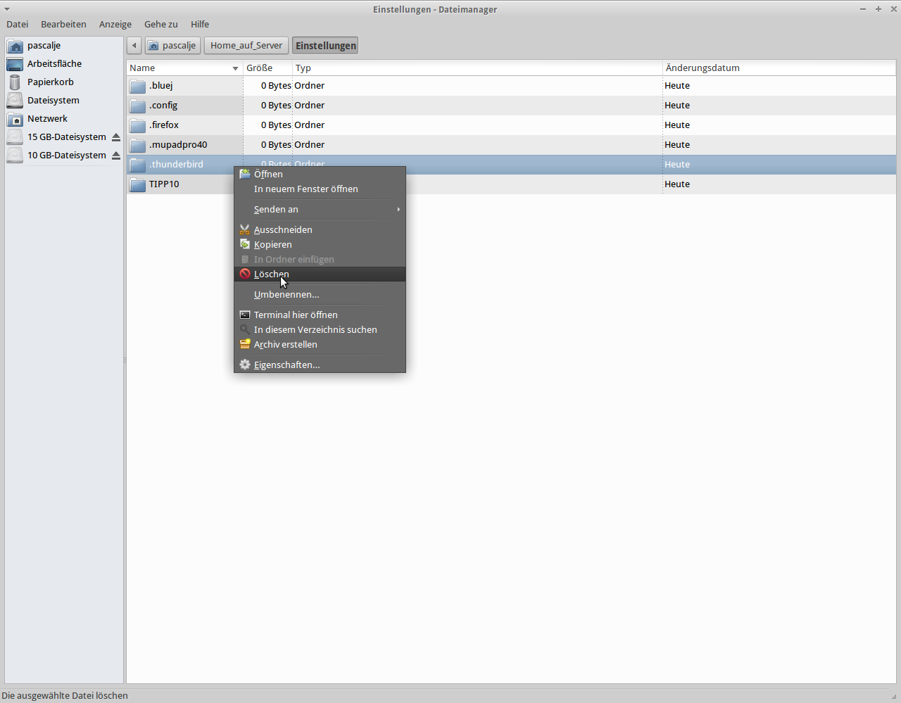

Thunderbird Einstellungen Löschen
Schritt 1. Gehe in das Verzeichniss Einstellungen in deinem Home_auf_Server
Schritt 2. Nun drücke die Tasten-Kombination Strg + H
Als nächstes werden ein Paar Verzeichnisse erscheinen.
Schritt 3. Lösche das Verzeichnis .thunderbird
